codly.theme
Returns scoped set and show rules that apply a built-in or custom theme to Codly elements.
Signature
codly.theme(..options)Parameters
| Parameter | Type | Default | Meaning |
|---|---|---|---|
preset (positional) |
str or dictionary |
"thesis" |
Built-in theme name or a theme dictionary. At most one positional value is accepted. |
| Named options | See codly.define-theme |
None | Shared tokens and element dictionaries forwarded to codly.define-theme. |
The built-in presets are "thesis", "dark", "clean", "github-light", "solarized-light", and "one-light". The "thesis" preset follows Codly’s ordinary visual defaults. See codly.themes for the preset dictionaries and codly.define-theme for supported shared tokens, element dictionaries, and merge behavior.
Behavior
Use the returned function as a show rule, commonly #show: codly.theme("dark"). It applies scoped set rules to Codly’s block, line, number, language, file, header, footer, highlight, callout, bubble, and annotation elements, along with their typography and syntax colors.
Named options are passed to codly.define-theme, which validates names and values and combines them with the selected preset. Explicit element fields and later local set rules keep their normal precedence.
Example: Basic Usage
Choose a preset to preview it on a code block:
#import "@preview/codly:2.0.0" as codly
#show: codly.theme(theme-preset)
#codly.new(
```py
def double(value):
return value * 2
```,
header: [example.py],
)Edit & run on your device
The controls supply the example variables. Their definitions are hidden here; Copy code includes the current values and your edits.
